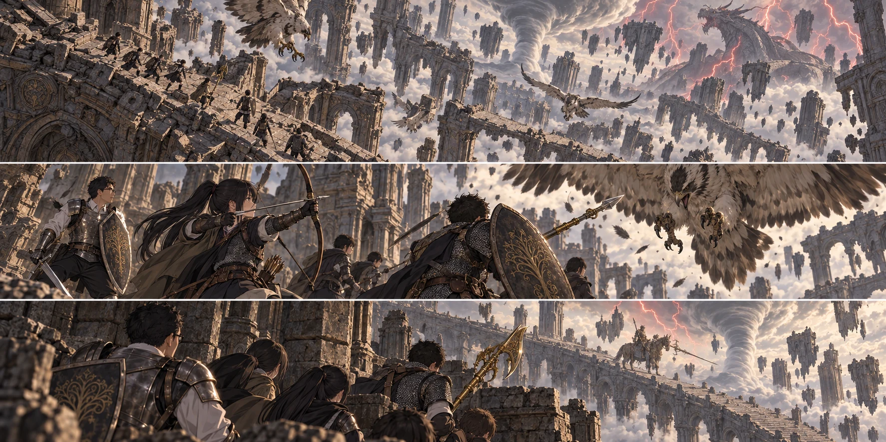

DAY87 / TURN1−97
雷を越える順番。

花「次、私が見ます。先生は後ろを」
【DAY87｜竜の聖堂、屋根】風の下から、羽ばたく音が上がった。花が短弓を持ち直す。ストームヴィルの鳥を思い出したが、ここには広い地面がない。避けた先が空というだけで、同じ一羽の意味が変わった。
先生の先読みは、赤い雷と鷹を警告していた。竜を倒す必要はない。だからといって、十三人で一斉に走れば通れる、とまでは書いてくれない。先生は石壁の切れ目と、次の遮蔽を見た。先に渡る者、上を見る者、最後尾を見届ける者。全員に同じ仕事をさせない順番を作った。
花は昨日の育成で、弓を引く腕が楽になったのを感じていた。でも、鳥が翼を畳む瞬間を見分ける目まで、数字で増えたわけではない。こちらへ来る一羽を選ぶ。遠い竜へ一本撃ち込みたくなる気持ちを、指から離した。
「次、私が見ます。先生は後ろを」。言ってから花は、自分が先生へ頼んだのではなく、仕事を渡したことに気づいた。先生は短く頷いた。返事を待つ間に、鷹が石の縁から跳んだ。
【鷹の低空襲撃｜2d6＝2・3＋4＝9】一羽目は矢を受けて落ちた。二羽目へ弦を引き直した時、三羽目が低く回り込んだ。花は身体を引き、石壁へ肩を擦った。腕の外側に熱い線が走る。弓を落とさずに済んだのは、強くなった腕のおかげか、それとも握り締めていた怖さのおかげか、わからなかった。
「花、下がって」。千夏が射線を引き継ぎ、盾が花の前へ入る。花は風を避けられる壁際で赤瓶を一本飲んだ。浅い傷が塞がっていく。誰も十三人全部に戻れとは言わなかった。三羽を倒し、使った矢を数え、花がもう一度弓を引けることを確かめてから、列を戻した。
花は先生に謝りかけて、口を閉じた。先生の方が先に言った。「知らせてくれて助かった」。できなかったことより、声に出したことで助かったことがある。花は腕を回し、小さく頷いた。次の射線は、千夏に任せる。
【雷の道｜2d6＝3・3＋4＝10】遠くで古竜が動くと、石畳の上へ赤い光が走った。先生は自分に雷の防護を掛けた。皆を包む幕にはならないし、雷の中へ立ち続けられる力でもない。先に出る自分の失敗を、小さくするための一回だった。
光が落ちた所へ続けて走らない。壁を挟み、次の群れが動くのを待つ。先生が先の遮蔽を確かめ、蓮が中継し、最後の組を健太が見届ける。竜の足元へ武器を向けず、進路だけを取った。巨大な影が翼を広げた時には、皆がもう石の陰に入っていた。
建物の奥で獣人の動く音がした。先生は床を蹴って飛び込まず、柱の間から巡回が離れるのを待った。今は部屋のすべてを調べない。通り抜ける側を選び、後ろの者へその位置を渡す。昇降機が上がり始めた時、ようやく風の音が少し遠くなった。
【大橋の脇】祝福を解放し、十三人の到達を登録する。花は休息で瓶を整え、弓の弦を確かめた。階段を上った先生は、橋の向こうにいる騎影を見て足を止めた。竜のツリーガード。かつて数日を使い、作戦を組み直した相手と同種の姿だった。
「また、いるんですね」。大地がハルバードの柄を握り直した。先生は頷いた。今度は門番を倒すこと自体が目的ではない。だが、その横を十三人で通すのは、一人で駆け抜けるのと同じではない。敵が守っている扉、その奥の空間、最後尾の通り道を見てから、先生は階段を下りた。今日は戦わない。
先読みには、その奥にいる者の名があった。獣の司祭。そして黒き剣、マリケス。封じられている死を解けば、王都は今の姿を失う。先生はその頁を隠さず、皆に見せた。「まだ取っていない物は残る。それでも、先へ進むための戦いになる」。誰も、取り残した宝箱の数を聞かなかった。
【教会｜2d6＝2・4＋4＝10】翼たちは三頭分を持ち帰った。遠征隊が雷を避けている時間に、教会では矢を点検し、雨が吹き込む場所へ荷物を置かないよう並べ直していた。赤月まであと三日。先生が帰ってから始める仕事にはしなかった。
【DAY87｜夕】財布四千百三十ルーン、矢四百十本。花の擦り傷は回復済み、新たな死者はいない。あと十二行動日。明日は門番を越えて、マリケスに挑めるか。先生は八十九日の帰還に線を引いたまま、その前に使える一日を見つめた。
今回の判定記録
| 判定 | 出目 | 補正 | 合計 |
|---|
| hawks | 2+3 | 4 | 9 |
| lightningRoute | 3+3 | 4 | 10 |
| base | 2+4 | 4 | 10 |
抽選前の条件 · 抽選結果